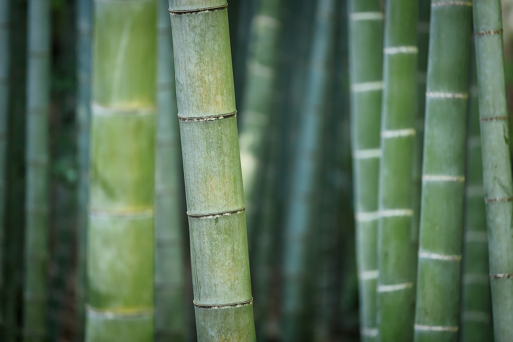

Bamboo forests exist
These forests play a crucial role in ecosystems, providing habitats for various plant and animal species.

Bamboo grows fast
Some species of bamboo can grow up to 36 inches in a single day under ideal conditions.

Bamboo is strong
Its tensile strength can rival that of steel, making it a popular choice.